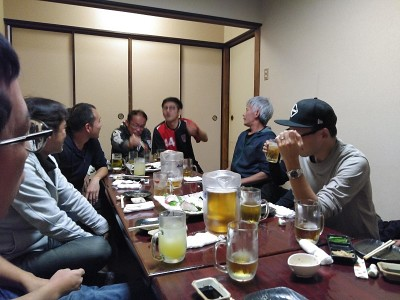

みんな、無事家に着いたかな？特にカズ大丈夫やったかなあ・・・・。
今日はチームの忘年会、師走の忙しい中１４名の参加がありました。僕は最初からいじられ倒して、最後はみんなで円陣組もうって提案があって、何の目的でと思ってたら、そのまま騙されて２年連続で空に舞いました、頼むから恒例行事にせんといてくれ～（涙）
いつも通りのハイテンションの中でみんな普段のこととかフォーメーションのこととか熱い想いを語っていたと思います。
まえちゃん、ゆっきーはいつも通りだけど、ヤス、テラ極悪コンビはほんま酷い、そこにわだっちのトドメの一撃、今日はターゲットになかやん大先生が居てくれたので良かったけどね。
トクさんが白いセーターを散々いじられるわ、むらっちやタカさんは上手く交わしてたりとかあったけど、初参加のトシキ、カズ、おみちゃんもいい感じでトシキが特にタクちゃんにかなり攻撃されてたのはまじおもろかったけど、一番人間的にやばいのはカズらしい（笑）
初参加のみなさん、良かったらコメントよろしく。もちろん他の人もね。
あっと言う間の楽しい時間でした。ほんと代表の威厳もくそもなく酷い扱いくらいましたが、いい仲間と巡り会えたと感謝してます。タクちゃん嬉しいカキコありがとう。
今年もあと少しチーム一丸で盛り上げて楽しくボールを蹴りましょう。
参加された皆さん、ほんとお疲れ様でした。
画像はちょっとやばい奴が写ってますが気にしないように（笑）
忘年会お疲れした！
エガリテの忘年会マジで最高！
楽しい時間を過ごせました！
あと、皆んな思ってること代弁するけど、
まっさん、ホンマありがとうやで。
師走ですね～、最初のうちは冷たい風もあったけど段々とお日さんも出てきて暑いくらいのお天気でしたね。
そんな中、遅刻早退合わせて最大で１６名の参加がありました。追加でスペシャルサポーターぶっち息子で１７名かな。
最初は１３名～１４名と思ってたんで、まんちゃんが来てくれていたんで少しはシュート練習してからいつものミニゲのゴールでしようと思って用意までしたんだけど、タカさんとかが用事すまして参加あったりとかで増えたので結局大ゴール使ってすることになりました。
最初はポストシュートとポストがパスを貰って振り向いてシュートの２つをしました。１５分くらいだったかな。
結構みんないいシュートもあったし、まんちゃんのナイスセーブもありました。
その後はゴールを両側ペナルティアリア前まで出して中ゲ、始まる時は１５名だったんですが、接触プレイでの怪我の可能性もあるからフィールドは許可出来なかったけど、片方のキーパーをぶっちJrがしてくれて８対８ですることが出来ました。キーパーしてくれてありがとね、勉強頑張りや～、アリバイ写真UPよろしく（笑）
中ゲではまあ、それぞれのいろんなプレーがありましたね。いいプレーもあったし、ミスもあったけどいじりはあるけど批判は無いのがうちの良さかなあって思います。自分が動いてほしいって言う思いが他のメンバーに伝わるのは中々難しいものだと思うので、ある程度は個々の予測で動くしかないですね。今日もオーバーラップしてくれたおみちゃんが声かけてくれたからそれがわかってパスを出せたので声かけは必要だけど、それが結果的に上手く行かなくても仕方ないと思いますね。
まあ、いつもどおりなかやんが持ち過ぎて４人くらいに囲まれてボコボコにされたのはおもろかった（笑）、それともりちゃん獲得じゃんけんで負けた時はボロンチョ扱いやったなあ（笑）
個人的には左足の怪我の違和感がまだあって、後怖さもあって今日は左足で１回も蹴ってないのでしばらく精神的な戦いがあるかなあっておもっちゃいました。
腰痛をおして来てくれたゆっきーも無理せんようにね。
これからの季節、寒くなって筋肉が固くなります。肉離れや怪我の確率が高くなるのを身を持ってわかっているので各自柔軟やUPはきちんとしてくださいね。
今年も１ヶ月、怪我無く楽しく乗り切りましょう。
本日参加された皆さんお疲れ様でした。
急な参加にも関わらず、仲間に入れていただきありがとうございました。小一時間でしたが楽しく体を動かせて良かったです。エガリテはメンバーが皆さん良い人でよかったと参加するたび思いますし、すごいプレーも見れて勉強になります。これからもよろしくです。
疲れたねー、１５分まわしだったけど最終的に８本、最後の方はメンバーもギリギリになって何とかしのいだって感じでしたね。僕もだけどする前から足の痛みがあったテラさん、途中で膝を痛めたトシキ、しっかり病院に行ったりしてきちんと治してくださいね。今日はカズの診断が欲しかった（笑）
まあ、そんな状況の中、遅刻早退を合わせて１６名の参加がありました。特に最初から最後まで参加してくれた方、ほんとにしんどい中頑張ってくれたと思います。だいたい６本～７本は出たんじゃないでしょうか？普段少なめの僕も７本で最後くたばったし。
主催者のヨドリッドさん、対戦した頂いたレオンFCさん、ありがとうございました、そしてお疲れ様でした。ヨドリッドさんとレオンFCさんに前の僕が居たチームが掛け持ちでしていて今までも何度も会っているけど今日は最大８名ほど参加があって同窓会気分で個人的には嬉しかったです、相変わらずいじられまくったけど（笑）
さて、８本。試合ごとにって覚えれるか～、でも覚えている範囲でカキコしますので、不足があれば参加者で補足をお願いします。
１本目はヨドリッドさんと。まっさん動画参照にしてね。
全体的に押し込まれてましたね。外から観ているとボランチが？？な位置であったり３バックの感じになってたりで、サイドからクロスやバックの間にボールを入れられて危ないシーンが結構ありました。
ファールでPKもありましたが、相手のキッカーが空気読んでぱぴゅーんしてくれたので助かりましたね。
攻めるのもどこに出せばいいかわからない感じで縦パスオンリーになってましたね。何とかしのいで双方無得点でした。
２本目はレオンFCさんと。僕は最近練習中のアンカーをしましたが、デフェンス力やスピードは結構行けるかなって思ったけどやっぱり体力が無いとしんどいっすねえ。サイドハーフとサイドバックの間の辺りもプレスかけに行っていたんでさらに体力消耗しましたね。後からバックしてたトシキと話をしてて、アンカーはサイドは行かなくてもいいだろうって話が合ったので今後はそうしたいと思います。サイドはインサイドハーフに行ってもらいます。
結構、サイド攻撃やオーバーラップもあったりで攻撃に厚みがあったと思います。
最大のチャンスは右サイドにオーバーラップしていたトシキからクロスをテラさんがジャンピングトラップ、そのままシュートみたいな華麗なプレーをしてくれたけど無常にゴールバーにコーン、その跳ね返ったボールをわだっちがいい感じでトラップしてそのままシュート、もう一度バーにきつねった（笑）
バックラインは安定してたけど、ハンドでファールでリスタートされた時に余裕こいて、結果的に前に出されてまんちゃんのナイス飛び出しがなかったら決められていたと思うので、あういうシーンは誰かがボールの近くに一度行ったり集中力を切らさないように気を付けましょう。双方無得点でした。
３本目はヨドリッドさんと。結構攻めこまれてましたが、何とかしのいでましたが、最後はデフェンスがお見合いした感じでそのままフリーでシュート打たれてまんちゃんが一度止めたんだけどそのままファンブルになって無常にゴールの中にゴロでボールが入っちゃいました。
僕はアンカーしてたけどインサイドハーフとサイドハーフが少し中でかぶっててサイドハーフへのボールが出せず活かせなかったのはもったいなかったですね。
４本目です。レオンFCさんと。全体的にうちが攻めてたと思います。１点取りましたが、右サイドバックのおみちゃんから右サイドハーフしていた僕にいい感じのループパスがあって、それをキープして前線へ、中を観たらタクちゃんが中央上がって来たけど相手もついて来ていたので、左サイドから駆け上がってきたトシキ目がけて強めの低空ボール入れたけど僕の下手さもあってトシキも間に合わず、相手に渡ってそのこぼれ球をむらっちがシュートして相手に当たって最後は中央に居たタクちゃんにドフリーでこぼれ球が渡ってそのまま冷静にシュート、ごっつあん的だったけど持っている人は流石です。
後は左のコーナーキックからむらっちがダイレクトボレーが惜しかったりありました。
僕が右コーナー蹴る時に左サイドの大外から上がってきたぶっちに出すために少し強めに蹴ったら場所はドンピシャだったけど、ぶっちのロケットヘッドはゴールバーを超えて行きました。ボールがぶれたらしいが、そんなわざとする技術はありません（笑）
５本目はヨドリッドさんと、双方無得点でした。なかやんにボール前に出すように裏を走ったら真横にきっついパスが来てそのままボールキープ出来ずゴールライン割ったくらいしか覚えとらんわ、あーーって絶叫してもうた。
６本目はレオンFCさんと。攻めはいい感じでしたね。トシキからのクロスをタクちゃんがダイビングヘッドが惜しい感じ（トシキはクロスあげた瞬間に決まった感持ってたけど（笑））
２回ほどのフリーキックでトリッキーなプレーもあったけどゴールバーの上だったりもありました。
２点うちが取りました、ぶっちがオーバーラップしてゴールラインギリギリのところでクロス、中に居たタクちゃんが決めたと思ってたら、相手に当たってオウンゴールだったみたいです。タクちゃんがその後に得点を決めたから良かったけど無かったら「俺のゴールでハットトリックにしよう」ってえげつない毒はいてた（笑）、試合前のUPの鳥かごでも「１０番穴や」って僕も毒はかれたし（涙）、ぶっちのゴール扱いでいいかって現地では思ってたけど、シュート打って相手に当たったりだったらわかるんだけど、明らかなクロスでそのボール自体がシュートで無かった場合ってどうなるんだろうってふと思ってました。誰か教えてくださいませ、そうじゃないとぶっちのゴール扱いはまぼろし～になるよ（笑）、知ってそうなタクちゃんかトシキ、ぶっち解説お願いします。
あと１点は相手がオフサイドと思って足を止めたけど、オフになら無くてそのままドリして冷静にタクちゃんが決めてくれました。
個人的にはバックでトラップミスという凡ミスが反省でした。
７本目はヨドリッドさんと。結構、サイドハーフで前線にプレッシャー掛けて、ゴールキーパーからのパスをもうちょっと届かなかったのが残念無念。
それでも何とか走ろうと努力してたのが報われました。中央でタクちゃんがドリで上がって行ったけどフォローが居なかったので右サイドから頑張って駆けあがって行ったら、タクちゃんに２名のマークがついたのでタクちゃんの前のスペースが空いたので斜めから前に出ようとした瞬間にタクちゃんが優しいパスをくれて、一瞬だけゴールの位置確認して、とりあえず枠に行けばいいなってくらいでそのまま左足でダイレクトでシュート、後からキーパーしてた知り合いに聞いたら１度キープすると思ってたみたいで意表をつかれた感じだったみたいでしたが、威力の無いゴロのシュートがゴール左側に決まりました。正直な話、キープしなかったではなくて出来なかったのが真相です。本人はたまたまとしか思ってませんが、それでも今年の初ゴールとヨドリッドさんに同点に追いついたのは嬉しかったですね。タクちゃんありがとう。
ごめん、その１連のプレー以外全く覚えとりません。
最後の８本目はレオンFCさんと。時間の関係で休憩が２分くらいでほぼ連続でみんなくたくたでしたね。
１点ハンドでPKで決められちゃいましたがあれは仕方ない、ぶっちが手じゃ無くて肘ってアピールしたたけど肘やったらハンドにならんのかな？？？、素朴な疑問（笑）、誰か教えてくださーい。
うちは３点取りました。１点目は相手がドリしてきたけど動きが読めたんで、僕がそれを奪って、前を見たら、センターラインギリギリ手前ででオフサイドにならないようにしながら前に走る準備をしているむらっちが居たので、僕には珍しくふわっとスピンをかけたボールを出して、むらっちが追いついて相手デフェンスも降り切ってシュート、キーパーセーブしたけどボールがゴールの中に入って得点になりました。
２点目はむらっちの鬼スルーのボールをタクちゃんが追いついてそのままドリでコース狙ってゴール、ハットトリックにアシストもで大活躍でしたね。いつもタク＆トシに頼ってしまっていてほんとありがたいです。３点目はタクちゃんからのパスをトシキがシュートで決めてくれました。
ゆっきーが撮ってくれた動画あるんだけど、途中で僕が足を攣って無様にこけた後に交代してもらったのそこまでの動画です、自分で観ても肩を借りて退場する姿が情けなかった（涙）、あ、ちなみにゆっきー動画は何度かなかやんの追跡カメラになってたわ（笑）
まあ、そんな感じの一日でした。僕もだけど今日の試合で結構体に負荷が掛かっていると思います。怪我した人は治すこと最優先、以外の方もきちんとメンテをしといてくださいね。本日の長丁場、参加された皆さん、本当にお疲れ様でした。
生き地獄だった（涙）、用意してたら絶対に無理しててえらいことになったと思うわ。いいお天気で先週よりもいいグランド状況のなか、僕は除いて１５名の参加がありました。ほんと楽しそうで観てて辛かったっす。
最初は途中で帰る予定で途中からとある人を進行役にお願いしたら、全く関係なく休憩時間もボール蹴ってたりで自由奔放、おまけにビブ忘れるし、こりゃ駄目だと思って結局最後まで見学やったわ（笑）
今日は５分くらいの鳥かごのアップのあとは７：８に分かれて、今日もぶっちがキーパーしてくれてゴール前に出して紅白戦をしました。
いつもどおりのまえちゃんとなかやんの面白コント、ゆっきーがダイレクトバイシクルシュートをしたらしい、むらっちのいいボレーとかテラさんのいきなりずっこけや、ぶっちがまえちゃんの声掛けで混乱し相手チームだったタカさんにパスしてしまってそのままミドル決まられたり、まんちゃんがゆっきーにシュート待って待ってとお願いしても結局間に合わなかったり、トシキがヘディングもらったぜドヤ顔の前にまんちゃんに取られたり、なかやんがおかちゃんに珍しくループパスしたりとか、全員が楽しく楽しく楽しく×１００してて辛かったよー。
まあ、そんな感じでした。来週は試合です、参加できるかたはよろしくお願いします。
本日、参加された皆さんお疲れ様でした。
はあ、地球は重かった。思いっきり自爆して、試合中は固定してたし、アドレナリンが出てたけど帰ってきたら痛みが増して半泣きです。
今日はいいお天気すぎましたね。少しだけ練習して１０時頃から試合をしましたが、ゴール前の陥没の影響で６ｍくらい前に出したからただでさえ狭いのに余計狭かったですね。その分横は広めに取りましたが、ほんとグランドは根本的に作りなおして欲しいもんです。
今日は遅刻早退合わせて１９名の参加がありました。それでも僕もだけどわっちにシュトが足を痛めたり、トシキが胸を痛めたりで少し怪我もあったのが残念ですね。
今日は初顔合わせで大宮SCさんとの対戦でした、チームの歴史は４０年以上あるみたいで、めちゃ上手い女子中学生も居ましたが基本プレーがしっかり出来ているなってイメージでした。大宮SCさん、長丁場のお相手して頂いて本当にありがとうございました。また今後ともよろしければこ交誼のほどよろしくお願い致します。
話合った結果、最終的には２０分６本をしたので、最後の方は足がみんな止まってましたね。ほんとお疲れ様でした。
まあ、覚えている範囲で１本目からカキコしていきます。各試合ごとにフォーメーションも変えていろいろ試せたのは良かったかなあって思います。
１本目は４-１-４-１でした。アンカーしていたわっちが頑張ってくれてました。その分攻めの人数も増えて攻めに厚みがあったのと、縦の長さが短い影響もありましたがうちでは珍しいダイレクトも含めてパスサッカーになっていたと審判して思ってました。
最初のチャンスはトシキからのふわっとした中央裏へのクロスを走りこんで来たタクちゃんが芸術的なトラップ、ドフリーでそのまま浮き球をシュート、すげえって思ったら勢いありすぎてゴールラインから２ｍくらいのところからゴール右上にホームラン、さすがタクちゃんおちをしっかりつけてくれました（笑）
先制点はうちでした。左サイドからオーバーラップしてきたぶっちが粘って中にゴロのクロス、そこに２列目から走りこんで来たトシキが足で上手く方向を変えて右側にゴールを決めてくれました。
バックは安定してましたね。ただ、右サイドでぶっちにハマさんが中学生の女の子にドリブルで翻弄されてたなあ（笑）、府レベル？代表とか言ってたなあ。将来のなでしことプレー出来たかも。
まっとん撮影動画ありまーす。
２本目もフォーメーションは4-1-4-1でした。僕はアンカーしましたが、個人的にはやっぱりこの形がいいなあって思いました。ただ、サイドハーフが中に入りすぎてインサイドハーフとかぶってのがちょっと残念でしたが、アンカーが最初にプレスしに行くとバックも余裕が出来ますし、怖くないミドルとか仕方なしに打ったりしていたので、センターバックよりやりやすいかもってちょっと思ってました。後は体力かな（笑）
左サイドを中心に攻めたりもしてましたが、攻められるのも多かった中でまんちゃんのセービングとゆっきーのナイスカバーで無得点で抑えれました。
あとはちょっといさかいがあったのは残念ですが、熱くなるのも仕方ないけど各メンバーごとの行動がチームのイメージに繋がるのでその点は各自注意してくださいね。
３本目はいつも通り4-2-3-1でしたが、ボランチはほぼ守備のみでしました。
２回ほどオフサイドと思って裏を取られてまんちゃんのナイスセーブとかに救われましたね。オフサイドを意識するなら、デフェンスは４人の中で統率役を決めて、他のメンバーはその人より後ろにいない、戻らない意識を持つことが大切です。それが出来ないと結局は裏を取られて終わりになります。僕がセンターバックしてて状況観てスイーパー的なポジションにするのは、裏を取られるよりフォローがしやすいから仕方なくしてるだけで、基本は横１線なのでラインコントロールについては毎回の試合で４人でどうするか話合うのがいいのかなあって思います。
攻めではタクちゃんが果敢に何度か攻めてくれたり、ゆっきーや僕もバックラインからこぼれ球シュートしたけど不発でした。
後はトシキが中学生の女の子にリフティングフェイントで交わした時はひでえやつやとちと思った（笑）
４本目は4-4-2だったかな？得点はうちが取りました。相手のクリアミスを奪ったむらっちがゴールラインでゴール左側らへんで囲まれながらも隙を見て、ふわっと反対側にクロス、ゴールの右側に待っていたタクちゃんがごっつあんヘディングで決めてくれました。でもあの位置にきちんと居るのが大したもんだけどね。
タクちゃん自身も高速ドリブルからコース狙ってシュート、キーパーは届かなかったけどカバーに入っていたバックにクリアされたのは惜しかったですね。あとトシキからのクロスにも中央で果敢に飛び込んでましたね。
あとはなかやんがおもろかった、いい場所でくさびでボールもらうんだけどそこで持ち過ぎて囲まれてボール取られるのを見学してたまえちゃんが「練習通りやな」って高笑い（笑）
4-4-2でもボランチ役の２人が上がりすぎてぽっかり中央が空いてたけどうちのいつもの悪い形もあって4-4-2だとバックとの距離感も意識が必要かなって思ってました。
ただ、僕は地球蹴って途中でダウンしたからなんも言えないなあ（恥）、急遽代理で出てくれたゆっきーありがとね。
５本目、フォーメーションはタクちゃん考案の4-2-1-3しました。僕は３トップの左だったけど攻めては楽だけどサイドの真ん中空くので結局は結構戻ることになって特に反対側のタカさんは献身的に戻ってましたね。僕はさぼっててすみません。
個人的に左サイドからカットインして横に２人交わしてシュートしようとしたら空振りで転倒、しょせん僕はそんなもんだと情けなかった（涙）
攻めてた反面、結構押し込まれてコーナーとか何度か蹴られてそのうち１本が直接決められちゃいましたね。あれはキッカーがお見事でどうしようもなかったです。
最後はくたくたの６本目、結果的にミドルシュートを真正面から２本いいコースに決められちゃいましたが、やっぱりボランチらへんの真ん中がぽっかり空いていたので、どんなフォーメーションでもいいけど、真ん中のプレス対応は誰かがきちんとしないと駄目ですね。
攻めではむらっちからのクロスをトシキがヘディングシュートしたけど少し下がり目だったのもあってふわっとした感じになってキーパーに取られましたね。
後はむらっちから縦パスを僕が裏に走りこんで、相手のデフェンスに押さえられながらもキーパー出てたからトーキックでゴール狙ったけど１ｍくらい左側だったのが残念でした。もう今年は得点無理やなあ（涙）
まあ、そんな感じでした。参加された皆さん本当にお疲れ様でした。
昨晩の雨がいらんかったなあ。今日は人数も多くて遅刻、早退合わせて１９名の参加がありました。ずっとグランドがどこか空いていないか毎日チェックしてたけど結局駄目で、いつもの場所だったらまた広くとったら言われるかもとか、水たまりがあったり、手前で子どものサッカー教室みたいなのもしようとしてたんで結局奥でしましたが、水たまりは無かったけどぬちゃぬちゃだったし、おっさんごちゃごちゃ言ってきたしでうざい一日でした。
ていうかグランド少なすぎ、ごちゃごちゃ言う前に２倍ほどにグランド拡充してほしいわ。
いつも通り、鳥かごしてミニゲしました。なかやんのなんのオチもおもろさも無い普通のトラップから開始しました。
みんなぬかるんであまりドリってなかったなかでほっしゃんだけはいつも以上にドリってたなあ、やっぱり車もバイクもオフロード仕様だからダートが得意なんやな（笑）
そんな状況でもテラ、急に家を追い出されて参加したごろうにトシキの連携やハマさんからのごろうへのパスからヘディングシュートとかいい場面もありましたね。
むらっちが足をとられていつも正確なパスがかなりミスってたのはちょっとびっくり。
一番意味不明なのがテラさんでしたね、足の痛みは無理しないで欲しいけど最後ドリブルしてたら「いたいいたい」と訴え、足大丈夫かと思ってたら首の筋ちがえたって（笑）
まあ、そんな状況の中で怪我無く、まあまあ楽しく出来たので良かったと思います。
参加された皆さん、お疲れ様でした。
来週は私用で休みます、参加される方よろしくお願い致します。その次の週の１０日は練習後、うちの主催で初めてのチームと試合予定にしています。そんな状況でうちが人数少ないとかいう恥ずかしいことが無いように、また審判の人数も必要ですので１５名以上の参加が必須です。何とか調整の上参加のほどよろしくお願い致します。
昨日の試合、お疲れ様でした！
まっさん、1試合目の得点シーンの動画が見切れていたのは、僕の高速ドリブルに見とれていたのでしょうか？（笑）絶対そうに違いない。もっと頼ってくれていいですよ！点とるんで。嘘です（笑）
でも最近、チラホラ僕に頼りすぎ。とか嬉しいことを言ってくれてますが、僕だけの力じゃないですから。実際昨日の点が決められたのも、テラさんが相手ディフェンスを引っ張って囮になってくれたから、DFの間が広がったのでそこをうまく突けました。テラさんあざっす！
頼りにされているのは良くわかるし、ボールを集めて貰えるのはありがたいことです。
戦術としては単調になりますね。実際４試合目とか１トップ行きましたけど、何も出来ませんでした。
オミさん、入って間もないのに良くチームの事を観察していますね。前々からDFライン、中盤でのボール回しは課題の１つでして、なかなか出来ないのが現状です。メンバーを固定していないから難しいんですよね～。DFラインでのボール回しは逆サイドに振ったらほぼ、戻ってこない。逆サイドにボールが渡ったらそこから縦に一気にドカンがうちの攻撃パターンです。DFの裏へ抜ける動きがほとんどで、ポストプレーをしない僕にも原因があります。
現状（4-2-3-1）
〇
〇 〇 〇
〇 〇
〇 〇 〇 〇
◎
まっさん案（4-1-4-1）
〇
〇 〇 〇 〇
〇
〇 〇 〇 〇
◎
提案（4-2-1-3）
〇 〇 〇
〇
〇 〇
〇 〇 〇 〇
◎
まぁ、いろいろ試してみたらいいかと思います。出場メンバーにもよりますし♪
フォーメーションの前にうちのチームの現状で確認しておきたい点があります。
うちのチームってサイドチェンジしませんよね。
DFラインで回して相手をばらけさしてパスコース作ってから攻撃を始める、とか、サイドまで回して、無理だったらもう一度やり直すために逆サイドに回すというよりは、ほぼそのまま縦に行く感じです。
これが変わらないならば、中盤の連携を飛ばして、縦への供給だけになり、フォワードに頼ることになると思います。
そうであれば4-4-2で前にターゲットを２つ置いたほうが良いのでは無いでしょうか？
あと提案ですが、4バックの時はスイーパーを置いた1-3の形よりもフラットな4バックの方が守りやすいです。スイーパーのフォーメーションの時はSBが中央によってスペースを埋めなくてはダメになり、サイド攻撃されるとSBが追いかけますが、相手はかなり余裕で横から攻めれるためスイーパーの効果が薄いです。サイド攻撃が続くとサイドハーフが降りてきてフォローするようになり、攻撃枚数が減る要因になってる気がします。
チームに入って間もないなか、今の感じた意見をそのまま書いており変な事を言っているかもしれず申し訳ありません。
今日一日ありがとうございました。